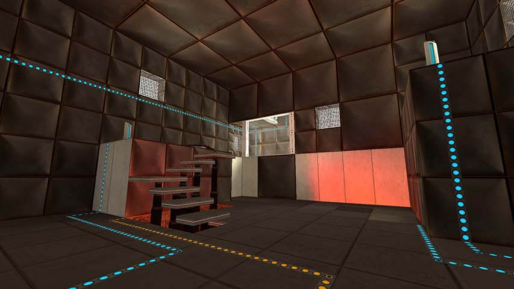

PortalZ
PortalZ WebsiteDownload PortalZ: The 2020 Slice
PortalZ is my map pack for Portal. 20 test chambers were planned, of which 14 were completed. They feature all standard Portal game elements, as well as some inspired by other map packs and Portal 2 news, such as thermal discouragement beams and gravity manipulation fields.

I initially designed most of the levels around 2008-2009—before much was known about Portal 2. What would later be called thermal discouragement beams were added when it was announced Portal 2 would include lasers, but because there was no footage of players interacting with the lasers, the ones in PortalZ are just obstacles. The blue (hard light) walls and laser walls use the same designs as the Portal: The Flash Version map pack. Electric fields mostly copy the implementation from TFV as well, but I made them yellow-orange for visual consistency with the Portal: Prelude ones and high energy pellets. Like Prelude, they also block portals, allowing them to functionally be timed fizzlers in addition to timed laser walls.
Gravity manipulation fields use the same basic implementation as Prelude, but the emitters and associated visual effects are my own. Because I wanted them to be a further explored testing element instead of just a one-off gimmick, I needed a way to indicate where a field would exist when triggered, and I went through several brushwork, model, and texture ideas before landing on the final design, which is simple and small enough to not get in the way, but distinctive enough for players to understand. I changed their activated state to purple because Prelude's red fields suggested they would damage the player, while purple had no association with other testing elements. In general, I established the pattern that warm colors are dangerous to the player, and cool colors are safe to touch, while keeping the elements recognizable to players of other popular map packs.
PortalZ includes some custom GLaDOS lines I created by splicing other dialogue. While most of the custom lines were spliced from Portal 1 dialogue, I did create a line for when an edgeless safety cube is destroyed using an instance of her saying “edgeless safety cube” from the Portal 2 co-op campaign after it released. I am proud of how the lines that made it into the release turned out, though the pre-existing fluctuations in GLaDOS's voice did give me some flexibility compared to a natural human voice.
One other minor but distinct element of PortalZ are my custom elevators. For a long time, test chambers were just connected by hallways because I hated waiting for Portal 1's slow elevators. After Portal 2 introduced elevators that got shot through vital apparatus vents, I tried designing my own out of brushwork. I went through several iterations before arriving at a design that was reminiscent of Portal 2, but felt at home in Portal 1's art style.

I released early beta versions of 10 chambers in 2009, which range from unpolished to unplayable. I continued to improve the chambers and release standalone updates to individual ones through around 2014. During 2020 lockdown, I spent a month finishing polishing up 9 of those original chambers, as well as 5 that were not part of that first slice. I released them at the beginning of November as PortalZ: The 2020 Slice.
More information and download details are on the PortalZ website. There are also more screenshots and videos of several test chambers and commentary on the design and development of each chamber.


